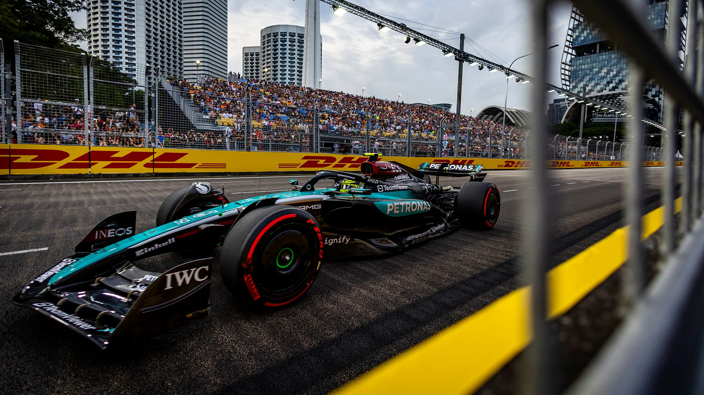
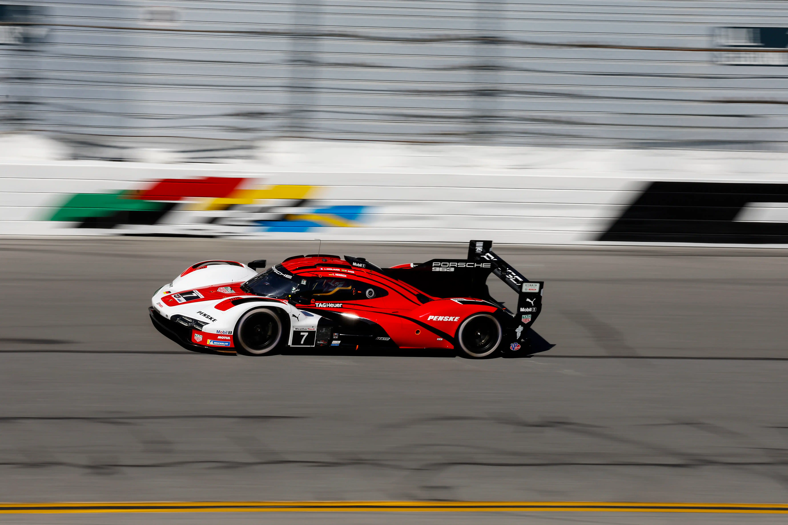
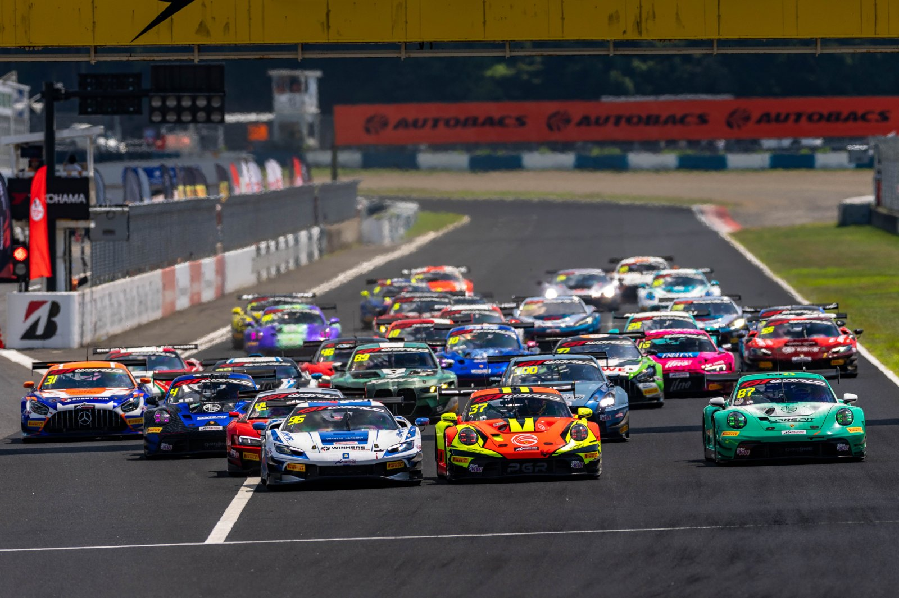
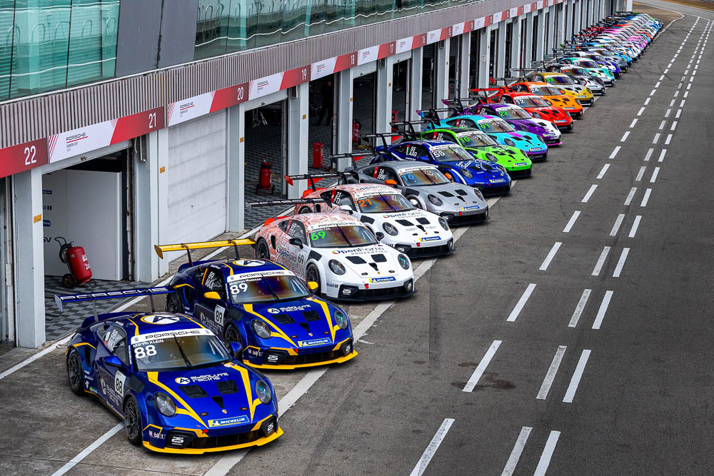

Singapore's Passion for Motorsport
Since 2008, the Singapore Grand Prix has placed the country firmly on the international motorsport map. Beyond Formula One, Singapore continues to attract engineers, teams and enthusiasts through regional GT and endurance racing.
Featured Motorsport Series

Formula One
The pinnacle of open-wheel racing, hosted on Singapore's Marina Bay Street Circuit.

FIA World Endurance Championship
Long-distance racing where reliability matters as much as outright speed.

IMSA SportsCar Championship
North America's premier sports car racing series.

GT World Challenge Asia
A regional GT series featuring production-based race cars across Asia.

Porsche Carrera Cup Asia
A single-make series featuring identical Porsche 911 GT3 Cup cars.

Ferrari Challenge Asia Pacific
A single-make Ferrari racing series for gentleman and professional drivers.
Timeline of Singapore Motorsport
First Singapore Formula One Grand Prix
Singapore hosts Formula One's first-ever night race, transforming the Marina Bay area into a temporary street circuit.
Growth of GT Racing
Regional GT championships expand across Asia, bringing more manufacturers and drivers to the region.
Electric Racing Expansion
Electric racing series gain traction globally, signalling a shift toward sustainable motorsport technology.
Sustainable Motorsport
Hybrid and synthetic fuel technologies continue to push motorsport toward a more sustainable future.
Did You Know?
The Singapore Grand Prix was the world's first Formula One night race.
Endurance races such as Le Mans last for 24 hours.
Many hybrid technologies used in today's road cars were first tested in endurance racing.
More Than Entertainment
Motorsport is more than entertainment — racing develops technology that eventually reaches everyday drivers. Singapore continues to play an important role in international motorsport, connecting engineers, teams and fans across the region.